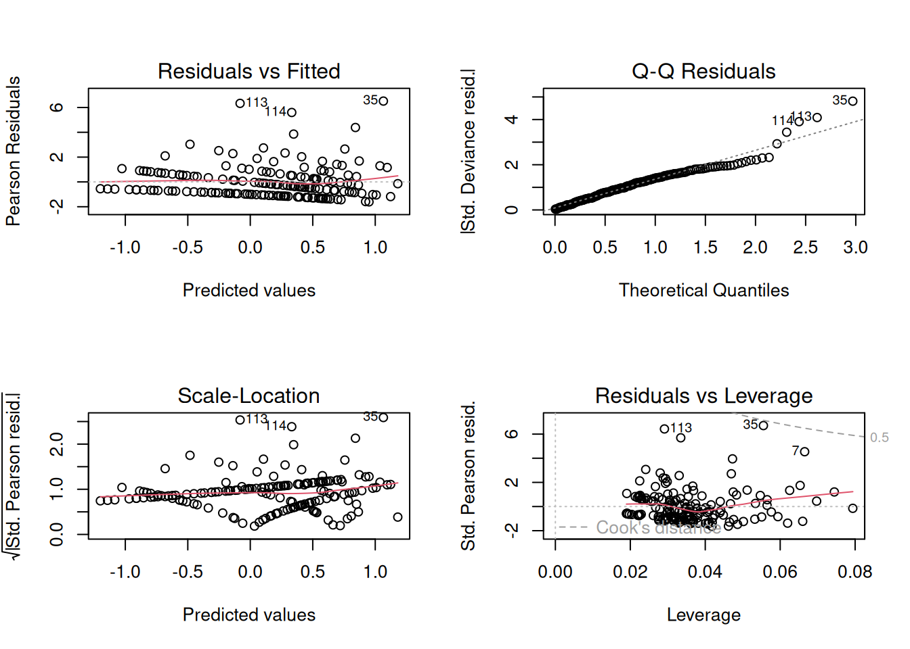
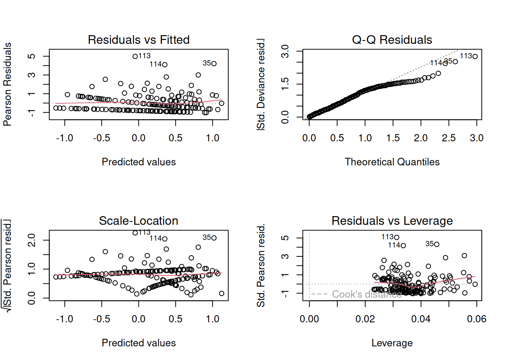

library(glarma)
library(tidyverse)
library(performance)
library(MASS)
## Dados
data(Polio)Ajuste de Modelos para Casos de Poliomielite
Pré-Requisitos
Variáveis
glimpse(Polio)Rows: 168
Columns: 8
$ RowNames <int> 1, 2, 3, 4, 5, 6, 7, 8, 9, 10, 11, 12, 13, 14, 15, 16, 1…
$ Cases <int> 0, 1, 0, 0, 1, 3, 9, 2, 3, 5, 3, 5, 2, 2, 0, 1, 0, 1, 3,…
$ Intcpt <int> 1, 1, 1, 1, 1, 1, 1, 1, 1, 1, 1, 1, 1, 1, 1, 1, 1, 1, 1,…
$ Trend <dbl> -0.072, -0.071, -0.070, -0.069, -0.068, -0.067, -0.066, …
$ CosAnnual <dbl> 1.000000e+00, 8.660254e-01, 5.000000e-01, -3.184654e-15,…
$ SinAnnual <dbl> 1.469528e-15, 5.000000e-01, 8.660254e-01, 1.000000e+00, …
$ CosSemiAnnual <dbl> 1.0, 0.5, -0.5, -1.0, -0.5, 0.5, 1.0, 0.5, -0.5, -1.0, -…
$ SinSemiAnnual <dbl> 2.939055e-15, 8.660254e-01, 8.660254e-01, -6.369308e-15,…- Variável resposta:
Cases - Variáveis preditoras:
Intcpt,Trend,CosAnnual,SinAnnual,CosSemiAnnual,SinSemiAnnual
y <- Polio[, 2]
X <- as.matrix(Polio[, 3:8])Ajuste do Modelo de Poisson
Ajuste do Modelo
glm_mod <- glm(y ~ X, family = poisson(link = "log"))Summary do Modelo
summary(glm_mod)
Call:
glm(formula = y ~ X, family = poisson(link = "log"))
Coefficients: (1 not defined because of singularities)
Estimate Std. Error z value Pr(>|z|)
(Intercept) 0.20694 0.07508 2.756 0.005849 **
XIntcpt NA NA NA NA
XTrend -4.79866 1.40289 -3.421 0.000625 ***
XCosAnnual -0.14873 0.09722 -1.530 0.126037
XSinAnnual -0.53188 0.10904 -4.878 1.07e-06 ***
XCosSemiAnnual 0.16910 0.09881 1.711 0.087013 .
XSinSemiAnnual -0.43214 0.10080 -4.287 1.81e-05 ***
---
Signif. codes: 0 '***' 0.001 '**' 0.01 '*' 0.05 '.' 0.1 ' ' 1
(Dispersion parameter for poisson family taken to be 1)
Null deviance: 343.00 on 167 degrees of freedom
Residual deviance: 288.85 on 162 degrees of freedom
AIC: 557.9
Number of Fisher Scoring iterations: 5O modelo de Poisson revela que XTrend, XSinAnnual e XSinSemiAnnual têm efeitos significativos sobre o número de casos de poliomielite, enquanto XCosAnnual e XCosSemiAnnual não apresentam evidências suficientes de impacto. A análise indica que, embora o modelo de Poisson capture algumas das dinâmicas dos dados, a significância dos coeficientes e o AIC sugerem que ele pode não ser o modelo mais adequado, especialmente considerando que a variância pode ser maior que a média.
Análise dos Resíduos do Modelo
Diagnóstico dos Resíduos
par(mfrow = c(2, 2))
plot(glm_mod)
- Resíduos vs Ajustados (Residuals vs Fitted):
- Objetivo: Verificar se a variabilidade dos resíduos é aleatória em relação aos valores ajustados.
- Interpretação: Se os resíduos mostram um padrão (como uma curva ou tendência), isso sugere que o modelo não está capturando todas as relações nos dados.
- Observação: No gráfico, parece haver um leve padrão nos resíduos, sugerindo possível falta de ajuste.
- Gráfico Q-Q (Q-Q Plot):
- Objetivo: Avaliar a normalidade dos resíduos.
- Interpretação: Os resíduos devem seguir uma linha reta ao longo da diagonal. Desvios nos extremos indicam que a distribuição dos resíduos não é normal.
- Observação: O gráfico mostra que os resíduos desviam da linha reta nos extremos, indicando que a distribuição dos resíduos pode não ser normal, o que é esperado em um modelo de Poisson.
- Escala-Localização (Scale-Location):
- Objetivo: Verificar a homogeneidade da variância (homocedasticidade).
- Interpretação: A linha vermelha deve ser aproximadamente horizontal, indicando que a variância dos resíduos é constante. Um padrão ascendente ou descendente indica heterocedasticidade.
- Observação: Há um leve padrão ascendente, sugerindo heterocedasticidade (variância não constante).
- Resíduos vs Alavancagem (Residuals vs Leverage):
- Objetivo: Identificar influências indevidas que podem afetar o modelo.
- Interpretação: Pontos com resíduos grandes e alta alavancagem podem ser influentes e distorcer os resultados do modelo.
- Observação: Há alguns pontos com alta alavancagem e resíduos grandes, o que pode indicar observações influentes.
Teste de Overdispersion
check_overdispersion(glm_mod)# Overdispersion test
dispersion ratio = 1.980
Pearson's Chi-Squared = 318.722
p-value = < 0.001Overdispersion detected.A razão de dispersão de 1.980 e o p-valor < 0.001 indicam sobre-dispersão. Isso sugere que a variância dos dados é maior que a média, o que é uma condição comum em dados de contagem, reforçando a inadequação do modelo de Poisson.
Teste de Zero Inflation
check_zeroinflation(glm_mod)# Check for zero-inflation
Observed zeros: 64
Predicted zeros: 53
Ratio: 0.83Model is underfitting zeros (probable zero-inflation).A razão de 0.83 sugere que o modelo não captura adequadamente o excesso de zeros nos dados. A presença de zeros inflacionados pode indicar que o modelo de Poisson não é o mais adequado, uma vez que ele não considera a estrutura de contagem de zeros.
Conclusão do Modelo de Poisson
O modelo de Poisson apresenta falta de homogeneidade de variância, sobre-dispersão e inflação de zeros, tornando-o inadequado.
Ajuste do Modelo Binomial Negativo
Ajuste do Modelo
nb_mod <- glm.nb(y ~ X)Summary do Modelo
summary(nb_mod)
Call:
glm.nb(formula = y ~ X, init.theta = 1.763244783, link = log)
Coefficients: (1 not defined because of singularities)
Estimate Std. Error z value Pr(>|z|)
(Intercept) 0.2093 0.0957 2.187 0.028728 *
XIntcpt NA NA NA NA
XTrend -4.3318 1.8946 -2.286 0.022234 *
XCosAnnual -0.1430 0.1287 -1.112 0.266320
XSinAnnual -0.5025 0.1379 -3.644 0.000269 ***
XCosSemiAnnual 0.1682 0.1308 1.286 0.198362
XSinSemiAnnual -0.4214 0.1324 -3.183 0.001459 **
---
Signif. codes: 0 '***' 0.001 '**' 0.01 '*' 0.05 '.' 0.1 ' ' 1
(Dispersion parameter for Negative Binomial(1.7632) family taken to be 1)
Null deviance: 201.22 on 167 degrees of freedom
Residual deviance: 171.20 on 162 degrees of freedom
AIC: 521.66
Number of Fisher Scoring iterations: 1
Theta: 1.763
Std. Err.: 0.484
2 x log-likelihood: -507.656 O modelo binomial negativo apresenta coeficientes significativos para algumas variáveis, especialmente XTrend, XSinAnnual e XSinSemiAnnual, sugerindo uma relação importante entre essas variáveis e o número de casos de poliomielite. O modelo também lida bem com a sobre-dispersão nos dados, evidenciado pelo parâmetro theta e pelas deviance. No entanto, a falta de significância em outras variáveis indica que nem todos os fatores considerados têm um impacto claro nos casos observados.
Análise dos Resíduos do Modelo Binomial Negativo
Diagnóstico dos Resíduos
par(mfrow = c(2, 2))
plot(nb_mod)
- Resíduos vs Ajustados (Residuals vs Fitted):
- Objetivo: Como no modelo de Poisson, verificar a aleatoriedade dos resíduos em relação aos valores ajustados.
- Interpretação: Espera-se que os resíduos não apresentem padrões.
- Observação: O gráfico apresenta padrões claros, sugerindo que o modelo binomial negativo não é necessariamente mais adequado do que o modelo de Poisson. A presença de padrões nos resíduos pode indicar que existem variáveis não capturadas pelo modelo ou uma estrutura não adequada para os dados.
- Gráfico Q-Q (Q-Q Plot):
- Objetivo: Avaliar a normalidade dos resíduos.
- Interpretação: Espera-se que os resíduos sigam a linha reta ao longo da diagonal.
- Observação: Não houve melhoria significativa na distribuição dos resíduos em relação ao modelo de Poisson. Isso indica que a suposição de normalidade dos resíduos não é atendida, o que pode sugerir que os dados têm uma distribuição mais complexa do que o modelo pode capturar.
- Escala-Localização (Scale-Location):
- Objetivo: Verificar a homogeneidade da variância.
- Interpretação: A linha deve ser horizontal, indicando variância constante.
- Observação: A linha é mais horizontal em comparação com o modelo de Poisson, o que sugere uma leve melhoria na homogeneidade da variância. Apesar disso, a presença de algum padrão ainda pode indicar que a variância não é completamente constante.
- Resíduos vs Alavancagem (Residuals vs Leverage):
- Objetivo: Identificar pontos influentes.
- Interpretação: Analisar se houve redução na quantidade de pontos influentes em relação ao modelo de Poisson.
- Observação: Os pontos influentes 113 e 35 ainda estão presentes. Isso é uma preocupação, pois esses pontos podem estar exercendo uma influência desproporcional no modelo. É importante investigar as causas desses pontos para entender seu impacto na análise.
Teste de Overdispersion
check_overdispersion(nb_mod)# Overdispersion test
dispersion ratio = 1.174
p-value = 0.36No overdispersion detected.A razão de dispersão próxima de 1 indica que a sobre-dispersão não é um problema significativo neste modelo, e o p-valor sugere que não há evidências suficientes para rejeitar a hipótese nula de que não há sobre-dispersão. Isso sugere que o modelo binomial negativo é adequado em relação a esse aspecto.
Teste de Zero Inflation
check_zeroinflation(nb_mod)# Check for zero-inflation
Observed zeros: 64
Predicted zeros: 68
Ratio: 1.07Model seems ok, ratio of observed and predicted zeros is within the
tolerance range (p = 0.552).A razão de zeros observados para previstos está dentro da faixa de tolerância (p = 0.552). Isso indica que o modelo parece adequado em capturar a inflação de zeros presente nos dados. A proporção de zeros não é significativamente diferente, sugerindo que o modelo está lidando bem com essa característica dos dados.
Conclusão do Modelo Binomial Negativo
A análise detalhada dos resíduos do modelo binomial negativo revelou algumas áreas de preocupação, como padrões nos resíduos e a presença de pontos influentes. Embora o modelo apresente uma leve melhoria em relação à homogeneidade da variância em comparação com o modelo de Poisson, não houve melhora significativa na normalidade dos resíduos. Os testes de sobre-dispersão e inflação de zeros sugerem que o modelo é aceitável em relação a esses aspectos, mas a presença de padrões nos resíduos e pontos influentes indica que o modelo pode não estar capturando completamente a estrutura dos dados.